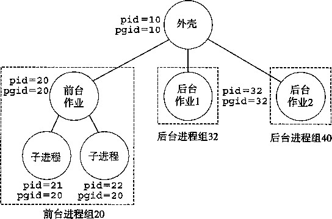
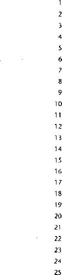

19
21 22
23
24
25
26
27
28
29
30
31
32
33
34
35
36
37
38
39
40
41
42
char *argv[MAXARGS]; /木 Argument list execve () */
char buf [MAXLINE] ; /* Holds modified comiriand line */
int bg; /* Sliould the job run in bg or fg? */
pid_t pid; /* Process id */
strcpy(buf, cmdline); bg = parseline(buf, argv); if (argvCO] == NULL)
return; /本 Ignore empty lines */
(!buiItin_command(argv)) {
if ((pid = ForkO) == 0) { /*■ Child runs user job */
if (execve(argv[0], argv, environ) < 0) {
printf("%s: Command not found An", argv[0]); exit(0);
>
* f rS A/ •!
if
Parent waits for foreground job to terminate */ (!bg) { int status;
if (waitpid(pid, festatus, 0) < 0)
>
else
}
return;
unix^error( H waitfg: waitpid error");
printf("%d %s", pid, cmdline);
/氺 If first arg is a builtin command, int builtin.command(char **argv)
if (!strcmp(argv[0], "quit")) /* quit command */
exit(0);
if (!strcmp(argv[0], "&")) /* Ignore singleton k */
return 1;
return 0; /* Not a builtin command */
code/ecf/shellex. c
it and return true */
图8-23 eval ：对外壳命令行求值
code/ecf/shellex. c
|
1 |
/* parseline - Parse the command |
line and build th.e argv array */ |
|
2 |
int parseline(char *buf, char **argv) s . |
|
|
4 |
U ■ char *delim; , /* Points to first space delimiter */ |
|
|
5 |
int argc; /* Number of args */ |
|
|
6 7 |
int bg; /* Background job? */ |
|
|
/ 8 |
buf [strlen(buf)-1] = ' '; /* |
Replace trailing 1 \n' with space |
|
9 |
while (*buf && (*buf == ' •)) |
/* Ignore leading spaces */ |
|
10 |
buf++; |
|
|
11 12 |
/* Build the argv list */ |
|
|
13 |
argc = 0; |
|
|
14 |
while ((delim = strchr(buf,' |
•))) { |
|
15 |
argv[argc++] = buf; |
|
|
16 |
♦delim = '\0'; |
|
|
17 |
buf = delim + 1; |
|
|
18 |
while (*buf && (*buf == • |
'))/* Ignore spaces */ |
|
19 |
buf++; |
|
|
'20 |
> |
|
|
21 |
argv[argc] = NULL; |
|
|
22 |
||
|
23 |
if (argc == 0) /* Ignore blank line */ |
|
|
24 |
return 1; |
|
|
25 |
||
|
26 |
/氺 Should the job run in the background? */ |
|
|
27 |
if ((bg = C*argv[argc-1] =='&')) != 0) |
|
|
28 |
argv [__ argc] = NULL ; |
|
|
29 |
||
|
30 |
return bg; |
|
|
31 |
} |
|
code/ecf/shellex. c
图8-24 parseline ：解析外壳的一个输入行
如果builtin_command返回0,那么外壳创瑋一个子进程，并在子进程中执行所请求的 程序。如果用户要^在后台运行该程序，那么外壳返回到循环的顶部，等待下一个命令行。否 则，外壳使用waitpid函数等待作业终止。当作业终止时，外壳就开始下一轮迭代。
注意，这个简单的外壳是有缺陷的，因为它并不回收它的后台子进程。修改这个缺陷就要求 使用信号，我们将在下一节中讲述信号。
8.5 信号
到目前为止我们对异常控制流的学习中，我们已经看到了硬件和软件是如何合作以提供基本 的低层异常机制的。我们也看到了操作系统是如何利用异常来支持一种称为进程上下文切换的异 常控制流形式。在本节中，我们将研究一种更高层的软件形式的异常，称为Unix信号，它允许 进程中断其他进程。
一个信号就是一条小消息，它通知进程系统中发生了一个某种类型的事件。比如，图8-25 展示了 Linux系统上支持的30种不同类型的信号。在外壳命令行上输入“man 7 signal”就能 得到这个列表。
序号 |
名称 |
默认行为 |
相应事件• |
1 |
SIGHUP |
终止 |
终端线挂断 |
2 |
SIGINT |
终止 |
来自键盘的中断 ^ |
3 |
SIGQUIT |
终止 |
来自键盘的退出 |
4 |
SIGILL |
终止 |
非法指令 |
5 |
SIGTRAP |
终止并转储存储器（1) |
跟踪陷阱 |
6 |
SIGABRT |
终止并转储存储器（1) |
来自abort函数的终止信号 |
7 |
SIGBUS |
终止 |
总线错误 |
8 |
SIGFPE |
终止并转储存储器(1) |
浮点异常 |
9 |
SIGKILL |
终止（2) |
杀死程序 |
10 |
SIGUSR1 |
终止 |
用户定义的信号1 |
11 |
SIGSEGV |
终止并转储存储器(1) |
无效的存储器引用（段故障） |
12 |
SIGUSR2 |
终止 |
用户定义的信号2 |
13 |
SIGPIPE |
终止 |
向一个没有读用户的管道做写操作 |
14 |
SIGALRM |
终止 |
来自alarm函数的定时器信号 |
.15 |
SIGTERM |
终止 |
软件终止信号 |
16 |
SIGSTKFLT |
终止 |
协处理器上的栈故障 |
17 |
SIGCHLD |
忽略 |
一个子进程停止或者终止 |
18 |
SIGCONT |
忽略 |
继续进程如果该进程停止 |
19 |
SIGSTOP |
停止直到下一个SIGC0NT(2) |
不来自终端的停止信号 |
20 |
SIGTSTP |
停止直到下一个SIGCONT |
来自终端的停止信号 |
21 |
SIGTTIN |
停止直到下一个SIGCONT |
后台进程从终端读 |
22 |
SIGTTOU |
停止直到下一个SIGCONT |
后台进程向终端写 |
23 |
SIGURG |
忽略 |
套接字上的紧急情况 |
24 |
SIGXCPU |
终止 |
CPU时间限制超出 |
25 |
SIGXFSZ |
终止 |
文件大小限制超出 |
26 |
SIGVTALRM |
终止 |
虚拟定时器期满 |
27 |
SIGPROF |
终止 * |
剖析定时器期满 |
28 |
SIGWINCH |
忽略 |
窗口大小变化 |
29 |
SIGIO |
终止 |
在某个描述符上可执行I/o操作 |
30 |
SIGPWR |
终止 |
电源故障 |
图 8-25 Linux 信号
注： 1) 多年前，主存储器是用一种称为磁芯存储器 （core memory) 的技术来实现的。 “ 转储存储器 ”（dumping core) 是一个历史术语，意思是把代码和数据存储器段的映像写到磁盘上。
2) 这个信号既不能被捕获，也不能被忽略。
每种信号类型都对应于某种系统事件。低层的硬件异常是由内核异常处理程序处理的，正常 情况下，对用户进程而言是不可见的。信号提供了一种机制，通知用户进程发生了这些异常。比 如，如果一个进程试图除以0,那么内核就发送给它一个SIGFPE信号（序号8)。如果一个进程 执行一条非法指令，那么内核就发送给它一个SIGILL信号（序号4)。如果进程进行非法存储 器引用，内核就发送给它一个SIGSEGV信号（序号11)。其他信号对应于内核或者其他用户进 程中较高层的软件事件。比如，如果当进程在前台运行时，你键入ctrl-c (也就是同时按下 Ctrl键和c键)，那么内核就会发送一个SIGINT信号（序号2)给这个前台进程。一个进程可 以通过向另二个进程发送一个SIGKILL信号（序号9)强制终止它。当一个子进程终止或者停 止时，内核会发送一个SIGCHLD信号（序号17)给父进程。
8.5.1信号术语
传送一个信号到目的进程是由两个不同步骤组成的：
• 发送信号。 内核通过更新目的进程上下文中的某个状态， 发送（递送 ） 一个 信号给目的进 程。发送信号可以有如下两个原因：1) 内核裣 测到一个系统事件，比如被零除错误或者 子进程终止。2) —个进程调用了 kill函数（在下一节中讨论)，显式地要求内核发送一
(2)控制传递到 信号处理程序
(1)进程接 收到信号
Inexl
(3)信号处 理程序运行
(4)信号处理程序 返回到下一条指令
图8，26信号处理。接收到信号会触发控制转移到信号处理程 序。在信号处理程序完成处理之后，它将控制返回给 被中断的程序
个信号给目的进程。一个进程可以发送信号给它自己。
• 接收信号。 当目的进程被内核强迫以某种方式对信号的发送做出反应时，目的进程就接 收了 信号。进程可以忽略这个信号，终止或者通过执行一个称为 信号处理程序 （signal handler)的用户层函数捕 获这个 信号。图8-26给出了信号处理程序捕获信号的基本思想。
一个只发出而没有被接收的信 号叫做待处理信号 （pending signal)。
在任何时刻，一种类型至多只会有 一个 待处理信号。如 果一个 进程有 一个类型为A的待处理信号，那么 任何接下来发送到这个进程的类型 为灸的信号都不会排队等待，它们只 是被简单地丢弃。一个进程可以有 选择性地 阻塞接 收某种信号。当一 种信号被阻塞时，它仍可以被发送，
但是产生的待处理信号不会被接收，
直到进程取消对这种信号的阻塞。
一个待处理信号最多只能被接收一次。内核为每个进程在pending位向量中维护着待处 理信号的集合，而在blocked位向量中维护着被阻塞的信号集合。只要传送了一个类型为fc的 信号，内核就会设置pending中的第H立，而只要接收了一个类型为灸的信号，内核就会清除 pending中的第A:位。
8.5.2发送信号
Unix系统提供了大量向进程发送信号的机制。所有这些机制都是基于 进程组 （process group)这个概念的。
1 .进程组
每个进程都只属于一个进 程组， 进程组是由一个正整数 进程组 ID来标识的。getpgrp函数 返回当前进程的进程组ID:
#include <unistd.h> |
|
pid 一 t getpgrp(void); |
|
返回：调用进程的进程组 ID 。 |
|
默认地，一个子进程和它的父进程同属于一个进程组。 |
一个进程可以通过使用 setpgid 函 |
数来改变自己或者其他进程的进程组： |
|
#include <unistd.h> |
|
int setpgid(pid_t pid, pid_t pgid); |
|
返回：若成功则为 0 ，若错误则为一 1 。 |
setpgid函数将进程pid的进程组改为pgid。如果pid是0,那么就使用当前进程的PID。 如果pgid是0,那么就用pid指定的进程的PID作为进程组ID。例如，如果进程15213是调 用进程，那么
setpgid(0, 0);
会创建一个新的进程组，其进程组ID是15213,并且把进程15213加入到这个新的进程组中。
用 /bin/kill 程序发送信号
/bin/kill程序可以向另外的进程发送任意的信号。比如，命令
unix> /bin/kill -9 15213
发送信号9 (SIGKILL)给进程15213。一个为负的PID会导致信号被发送到进程组PID中的每 个进程。比如，命令
unix> /bin/kill -9 -15213
发送一个SIGKILL信号给进程组15213中的每个进程。注意，在此我们使用完整路径/bin/ kill,因为有些Unix外壳有自己内置的kill命令。
从键盘发送信号
Unix外壳使用作业（job)这个抽象概念来表示为对一个命令行求值而创建的进程。在任何 时刻，至多只有一个前台作业和0个或多个后台作业。比如，键入
unix> Is I sort
创建一个由两个进程组成的前台作业，这两个进程是通过Unix管道连接起来的：一个进程运行 Is程序，另一个运行sort程序。
外壳为每个作业创建一个独立的进程组。典型地，进程组ID是取自作业中父进程中的一 个。比如，图8-27展示了有一个前台作业和两个后台作业的外壳。前台作业中的父进程PID为 20,进程组ID也为20。父进程创建两个子进程，每个也都是进程组20的成员。
#include <sys/types.li> |
|
#include <signal.h> |
|
int kill(pid_t pid, int sig); |
|
返回：若成功则为 0 ，若错误则为 —1 。 |

图8-27前台和后台进程组
在键盘上输入ctrl-c会导致一个SIGINT信号被发送到外壳。外壳捕获该信号（参见 8.5.3节)，然后发送SIGINT信号到这个前台进程组中的每个进程。在默认情况下，结果是终止 前台作业。类似地，输入ctrl-z会发送一个SIGTSTP信号到外壳，外壳捕获这个信号，并发 送SIGTSTP信号给前台进程组中的每个进程。在默认情况下 ， 结果是停止（挂起）前台作业。
用kill函数发送信号
进程通过调用kill函数发送信号给其他进程（包括它们自己)。
如果pid大于零，那么kill函数发送信号sig给进程pid。如果pid小于零，那么 kill发送信号sig给进程组abs (pid)中的每个进程。图8-28展示了一个示例，父进程用 kill函数发送SIGKILL信号给它的子进程。
code/ecf/kill.c
1
2
3
4
5
6
7
9 0 1 2
3
4
5
7
#include "csapp.h"
int mainO
pid_t pid;
/* Child sleeps until SIGKILL signal received, then dies */ if ((pid = ForkO) == 0) i
Pause (); /* Wait for a signal to arrive */
printf("control should never reach here!\n"); exit(0);
}
/* Parent sends a SIGKILL signal to a child 氺/
Kill(pid, SIGKILL); exit(0);
>
code/ecf/killc
图8-28使用kill函数发送信号给子进程
用alarm函数发送信号
进程可以通过调用alarm函数向它自己发送SIGALRM信号。
#include <unistd.h>
unsigned int alarm(皿signed int secs);
返回：前一次闹钟剩余的秒数，若以前没有设定闹钟，则为 0 。
alarm函数安排内核在secs秒内发送一个SIGALRM信号给调用进程。如果secs是 零，那么不会调度新的闹钟（alarm)。在任何情况下，对alarm的调用都将取消任何待处理的 (pending)闹钟，并且返回任何待处理的闹钟在被发送前还剩下的秒数（如果这次对alarm的 调用没有取消它的话)，如果没有任何待处理的闹钟，就返回零。
图8-29展示了一个叫做alarm的程序，它安排自己被SIGALRM信号在5秒内每秒中断一 次。当传送第6个SIGALRM信号时，它就终止。当我们运行图8-29中的程序时，我们得到以 下的输出：5秒内每秒一个“BEEP”，后面跟随着程序终止时的一个“BOOM”：
unix> ./alarm
BEEP
BEEP
BEEP
BEEP
BEEP
BOOM!
注意， 图 8-29中的程序使用signal函数设置了一个 信号处 理函数（handler),只要进 程收到一个SIGALRM信号，就异步地调用该函数，中断main程序中的无限while循环。当 handler返回时，控制传递回main函数，它就从当初被信号到达时中断了的地方继续执行。 设置和使用信号处理程序可能是相当微妙的，这将是下面几节讨论的主题。
code/ecf/alarm.c

#include "csapp.h"
void handler(int sig)
static int beeps = 0;
printf("BEEPXn")； if (++beeps < 5)
Alarm(1); /* Next SIGALRM will be delivered in 1 second */ else {
printf("BOOM!\n"); exit(0);
>
>
int mainO {
Signal(SIGALRM, handler); /* Install SIGALRM handler */
Alarm(l); /* Next SIGALRM will be delivered in Is */
while (1) {
; /* Signal handler returns control here each time */
}
exit(0);
y
code/ecf/alarm. c
图 8-29 使用 alarm 函数来调度周期性事件
接收信号
当内核从一个异常处理程序返回，准备将控制传递给进程/7时，它会检査进程/7的未被阻塞 的待处理信号的集合（pending^〜blocked)。如果这个集合为空（通常情况下)，那么内核将 控制传递到;7的逻辑控制流中的下一条指令U next )。
然而，如果集合是非空的，那么内核选择集合中的某个信号A (通常是最小的并且强制 /7接收信号A:。收到这个信号会触发进程的某种行为。一旦进程完成了这个行为，那么控制就传 递回p的逻辑控制流中的下一条指令（/ next )。每个信号类型都有一个预定义的默认行为，是下面 中的一种：
•进程终止。
•进程终止并转储存储器 （dump core )。
•进程停止直到被SIGCONT信号重启。
•进程忽略该信号。 图8-25展示了与每个信号类型相关联的默认行为。比如，收到SIGKILL的默认行为就是终止接 收进程。另外，接收到SIGCHLD的默认行为就是忽略这个信号。进程可以通过使用signal函 数修改和信号相关联的默认行为。唯一的例外是SIGSTOP和SIGKILL,它们的默认行为是不能 被修改的。
#include <signal.h>
typedef void (*sighandler_t)(int);
sighandler_t signal(int signum, sighandler_t handler);
返回：若成功则为指向前次处理程序的指针，若出错则为 SIG_ERR ( 不设置 ermo )。
signal函数可以通过下列三种方法之一来改变和信号signum相关联的行为：
•如果handler是SIG_IGN,那么忽略类型为signum的信号。
•如果handler是SIG_DFL,那么类型为signum的信号行为恢复为默认行为。
•否则 ， handler就是用户定义的函数的地址 ， 这个函数称为 信号处理程序 （signal handler),只要进程接收到一个类型为sigmim的信号 ， 就会调用这个程序。通过把处理 程序的地址传递到signal函数 从而改 变默认行为， 这叫做设置信号处理程序 （installing the handler) 0 调用信号处理程序称 为捕获信号。 执行信号处理程序称 为处理信号。
当 一个进 程捕获 了一个 类型为A的信号时，为信号A设置的处理程序被调用， 一个 整数参数被设 置为 k 0 这个参数允许同一个处理函数捕获不同类型的信号。
当处理程序执行它的return语句时 ， 控制（通常）传递回控制流中进程被信号接收中断 位置处的指令。我们说“通常”是因为在某些系统中被中断的系统调用会立即返回一个错误。
图8-30展示了一个程序，它捕获用户在键盘上输入ctrl-c时外壳发送的SIGINT信号。 SIGINT的默认行为是立即终止该进程。在这个示例中 ， 我们将默认行为修改为捕获信号，输出 一条信息，然后终止该进程。
： code/ecf/sigintl.c
'1 #include "csapp.h"
2
void handler(int sig) /* SIGINT handler */
printf("Caught SIGINT\n");
exit(0);
}
8
int mainO
10 {
/* Install the SIGINT handler */
if (signal(SIGINT, handler) == SIG_ERR)
unix_error("signal error");
14
pause(); /* Wait for the receipt of a signal */
16
exit(0);
>
code/ecf/sigintl. c
图8-30 —个用信号处理程序捕获SIGINT信号的程序
处理程序函数定义在第3〜7行中。主函数在第12〜13行设置处理程序，然后进入休眠 状态，直到接收到一个信号（第15行)。当收到SIGINT信号时 ， 运行处理程序 ， 输出一条信息 (第5行)，然后终止这个进程（第6行)。
信号处理程序是计算机系统中并发的又一个示例。信号处理程序的执行中断main C函数的 执行，类似于低层异常处理程序中断当前应用程序的控制流的方式。因为信号处理程序的逻辑控 制流与主函数的逻辑控制流重叠，信号处理程序和主函数并发地运行。
练习题8.7编写一个叫做snooze的程序，有一个命令行参数，用这个参数调用练习题8.5中的snooze
函数，然后终止。编写程序，使得用户可以通过在键盘上输入Ctrl-c中断snooze函数。比如：
unix> . /snooze 5
Slept for 3 of 5 secs. User hits crtl-c after 3 seconds
皿ix>
信号处理问题
对于只捕获一个信号并终止的程序来说，信号处理是简单直接的。然而，当一个程序要捕获 多个信号时，一些细微的问题就产生了。
待处理信号被阻塞。 Unix信号处理程序通常会阻塞当前处理程序正在处理的类型的待处理 信号。比如，假设一个进程捕获了一个SIGINT信号，并且当前正在运行它的SIGINT处 理程序。如果另一个SIGINT信号传递到这个进程，那么这个SIGINT将变成待处理的， 但是不会被接收，直到处理程序返回。
•待 处理 信号不会排队等待。 任意类型至多只有一个待处理信号。因此，如果有两个类型为 A的信号传送到一个目的进程，而由于目的进程当前正在执行信号的处理程序，所以信 号A是阻塞的，那么第二个信号就被简单地丢弃，它不会排队等待。关键思想是存在一个 待处理的信号仅仅表明至少已经有一个信号到达了。
• 系统调用可以被中断。 像read、wait和accept这样的系统调用潜在地会阻塞进程一段 较长的时间，称为慢 速系统调用。 在某些系统中，当处理程序捕获到一个信号时，被中断 的慢速系统调用在信号处理程序返回时不再继续，而是立即返回给用户一个错误条件，并 将errno设置为EINTR。
让我们利用一个简单的应用程序更深入地看看信号处理的细微之处，这个应用程序本质上类 似于外壳和Web服务器这样的真实程序。基本的结构是一个父进程创建一些子进程 ， 这些子进 程独立运行一会儿，然后终止。父进程必须回收子进程，以避免在系统中留下僵死进程。但是我 们也想让父进程在子进程运行时可以自由地做其他工作。所以，我们决定用SIGCHLD处理程序 回收子进程，而不是显式地等待子进程终止。（回想一下 ， 只要有一个子进程终止或者停止，内 核就会发送一个SIGCHLD信号给父进程。)
图8-31展示了我们的第一次尝试。父进程设置了一个SIGCHLD处理程序，然后创建了三 个子进程，其中每个子进程运行1秒，然后终止。同时，父进程等待来自终端的一个输入行， 随后处 理它。 这个处理被模型化为一个无限循环。当每个子进程终止时 ， 内核通过发送一个 SIGCHLD信号通知父进程。父进程捕获这个SIGCHLD信号，回收一个子进程，做一些其他的 清除工作（模型化为sleep (2)语句)，然后返回。
图8-31中的signall程序看起来相当简单。然而，当在Linux系统上运行它时，我们得到 如下输出：
linux> ./signall
Hello from child 10320
Hello from child 10321
Hello from child 10322 Handler reaped child 10320 Handler reaped child 10322 <cr>
Parent processing input
code/ecf/signall . c
#include "csapp.h" void handler1(int sig) pid_t pid;
if ((pid = waitpid(-1, NULL, 0)) unix_error("waitpid error"); printf C"Handler reaped child %d\n", (int)pid); Sleep(2); return;
< 0)
int mainO
int i, n;
Char buf[MAXBUF];
if (sighaKSIGCHLD, handler 1) := SIG_ERR) ufiix一社ror (" signal error ); 、
/* Parent creates children */ _
for (i = 0; i < 3; i++) i if (ForkO =: 0) {
printf("Hello from child %d\n", (int)getpid()); Sleep(1); exit(0);
>
if
>
Parent waits for terminal input and then processes it */ ((n = read(STDIN_FILENQ, buf, sizeof(buf))) < 0) unix_error("read");
printf("Parent processing input\n"); while (1)
exit(0);
: code/ecf/signall. c
图8-31 signall :这个程序是有缺陷的，因为它无法处理信号阻塞、信号不排队等待和系统调用被 中断这些情况
从输出中我们注意到，尽管发送了 3个SIGCHLD信号给父进程，但是其中只有两个信号被接收 了，因此父进程只是回收了两个子进程。如果挂起父进程，我们看到，实际上子进程10321没有 被回收，而是成为了一个僵死进程（在 ps 命令的输出中由字符串 “defunct” 表示）：
<ctrl-z>
Suspended linux> ps
PID TTY STAT TIME COMMAND
10319 p5 T 0:03 signal1
10321 p5 Z 0:00 signal1 〈defunct〉
10323 p5 R 0:00 ps
哪里出错了呢？问题就在于我们的代码没有解决信号可以阻塞和不会排队等待这样的情况。发生 的情况是：父进程接收并捕获了第一个信号。当处理程序还在处理第一个信号时，第二个信号就 传送并添加到了待处理信号集合里。然而，因为SIGCHLD信号被SIGCHLD处理程序阻塞了， 所以第二个信号就不会被接收。此后不久，就在处理程序还在处理第一个信号时，第三个信号到 达了。因为已经有了一个待处理的SIGCHLD,第三个SIGCHLD信号会被丢弃。一段时间之后， 处理程序返回，内核注意到有一个待处理的SIGCHLD信号，就迫使父进程接收这个信号。父进 程捕获这个信号，并第二次执行处理程序。在处理程序完成对第二个信号的处理之后，已经没有 待处理的SIGCHLD信号了，而且也绝不会再有，因为第三个SIGCHLD的所有信息都已经丢失 了。由此得到的重要教训是，不可以用信号来对其他进程中发生的事件计数。
为了修正这个问题，我们必须回想一下，存在一个待处理的信号只是暗示自进程最后一次收 到一个信号以来，至少已经有一个这种类型的信号被发送了。所以我们必须修改SIGCHLD处理 程序，使得每次SIGCHLD处理程序被调用时，回收尽可能多的僵死子进程。图8-32展示了修 改后的SIGCHLD处理程序。当我们在Linux系统上运行signal2时，它现在可以正确地回收 所有的僵死子进程了：
linux> ./signal2 Hello from child 10378 Hello from child 10379 Hello from child 10380 Handler reaped child 10379 Handler reaped child 10378 Handler reaped child 10380 <cr>
Parent processing input
然而，我们还没有完成任务。如果我们在一个较老版本的Solaris操作系统上运行signal2 程序，它会正确地回收所有的僵死子进程。然而现在，在从键盘上进行输入之前，被阻塞的 read系统调用就提前返回一个错误：
solaris> ./signal2 Hello from child 18906 Hello from child 18907 Hello from child 18908 Handler reaped child 18906 Handler reaped child 18908 Handler reaped child 18907 read: Interrupted system call
出了什么问题呢？出现这个问题是因为在特定的Solaris系统上，诸如read这样的慢速系 统调用在被信号发送中断后 ， 是不会自动重启的。相反，和Linux系统自动重启被中断的系统调 用不同，它们会提前返回给调用应用程序一个错误条件。
code/ecf/signal2. c
1 #include "csapp.h"
|
2 3 A |
void handler2(int sig) J* |
|
5 f、 |
\ pid_t pid; |
|
0 7 |
while ((pid = waitpid(-1, NULL, 0)) >0) |
|
8 |
printf("Handler reaped child %d\n", (int)pid); |
|
9 |
if (errno != ECHILD) |
|
10 |
miix_error("waitpid error"); |
|
11 |
Sleep (2); |
|
12 13 |
return ; } |
|
\A 15 1 /C |
int mainO I |
|
I o 17 |
X int i, n; |
|
18 1 o |
char buf[MAXBUF]; |
|
I y 20 |
if (signal(SIGCHLD, handler2) == SIG_ERR) |
|
21 |
unix_error("signal error"); |
|
22 |
|
|
23 |
/* Parent creates children 氺/ |
|
24 |
for (i = 0; i < 3; i++) { |
|
25 |
if (ForkO == 0) { |
|
26 |
printf ("Hello from child %d\n" , (int)getpidO) |
|
27 |
Sleep(1) ; |
|
28 |
exit(0); |
|
29 |
} |
|
30 |
> |
|
31 |
|
|
32 |
/* Parent waits for terminal input and then processes : |
|
Yi |
if ((n = read(STDIN_FILEN0, buf, sizeof(buf ))) < 0) |
|
34 |
unix_error C " read error") ; |
|
35 |
|
|
36 |
printf("Parent processing input\n M ) ; |
|
37 |
while (1) |
|
38 |
9 |
|
39 |
|
|
40 |
exit(0) ; |
|
41 |
> |
code/ecf/signal2. c
图8-32 signal:图8-31的一个改进版本，它能够正确解决信号会阻塞和不会排队等待的情况。 然而，它没有考虑系统调用被中断的可能性
为了编写可移植的信号处理代码，我们必须考虑系统调用过早返回的可能性，然后当它发 生时手动重启它们。图8-33展示了对signal2的修改，它会手动地重启被终止的read调用。 errno中的EINTR返回代码表明read系统调用在它被中断后提前返回了。
当我们在一台Solaris系统上运行新的signal3程序时，程序会正确运行：
solaris> ,/signal3 Hello from child 19571 Hello from child 19572 Hello from child 19573
Handler reaped child 19571 Handler reaped child 19572 Handler reaped child 19573 <cr>
Parent processing input
code/ecf/signal3. c
1
2
3
4
5
6
7
9 0 1 2 3
14
15
•17 18
19
21 22
23
24
25
26
27
28
29
30
31
32
33
34
35
36
37
38
39
40
41
42
43
0)
(int)pid);
SIG 一 ERR)
child %d\n", (int)getpid0);
/* Manually restart the read call if it is interrupted */ While ((n = read(STDIN_FILENO, buf, sizeof(buf))) < 0) if (errno != EINTR)
unix—error("read error");
printf("Parent processing input\n"); while (1)
#include "csapp.h" void handler2(int sig) pid_t pid;
while ((pid = waitpid(-1, NULL, 0)) > printf ("Handler reaped child 7 0 d\n' if (errno != ECHILD)
unix_error("waitpid error");
Sleep(2); return;
/* Parent creates children for (i = 0; i < 3; i++) •[ pid = ForkO; if (pid =- 0) {
printf("Hello from Sleep(1); exit(0);
>
}
if (signal(SIGCHLD, handler2) « 皿ix一error("signal error");
int mainO { int i, n; char buf[MAXBUF]; pid_t pid;
exit(O);
code/ecf/signal3. c
图 8-33 signal 3 : 图 8-32 的一个改进版本，它正确地解决了系统调用可能被中断的情况 @ 练习题 8.8 下面这个程序的输出是什么？